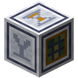
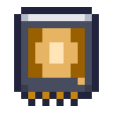
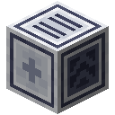
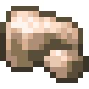

Milestones
Every milestone is an advancement, in the frame the advancement screen gives it, and the frame lights up once you have made it. They run roughly in the order a world unfolds, though most chapters can be taken in any order.
A first model
 Checkpoint
Checkpoint
Save a trained model. Cable an Embedding Table to a Model Core, train it on
the Forecast Dataset and save it: Getting Started.
What Comes Next
Save a model that passes the Forecasting test. Saving tests a model on every benchmark; a first model passes this one once
it has practised long enough.
 A Watched Pot
A Watched Pot
Place a Forecaster by your furnaces or crops. It writes down what the furnaces and crops around it do:
The Forecaster.
 Ahead of Time
Ahead of Time
Have a Forecaster run your furnaces or crops ahead with a model it trusts. A model that passes Forecasting is trusted with machines once they have made
about a dozen items; your own field may take a model trained on the Forecaster's own log.
 Further Ahead
Further Ahead
Have Forecaster II run blocks eight times as fast. The Fabricator makes Forecaster II from a transformer photomask; a model
within 5% of its blocks runs them eight times as fast: The Forecaster.

Have Forecaster III run a burst at ×256. The Fabricator makes Forecaster III from a transformer photomask. Give it 32 compute,
power, and a model within 2.5% of its blocks: The Forecaster.
 Borrowed Time
Borrowed Time
Run a block ahead with an Hourglass bound to a Forecaster. The Fabricator makes it from an attention photomask, and it keeps time
while carried. Sneak-use a Forecaster that runs blocks ahead to bind it, then use it on one of those blocks:
The Forecaster.
 Agent
Agent
Make an agent. Craft one and place it where it should live: Agents.
 Hello, World
Hello, World
Give an agent a program of your own. Type one in its screen, or click it together from the palette.
One Step at a Time
Hold a program in the debugger. On a program's Trace tab, pause it, run it one step at a time, or click a line to stop
there: Programs.
 Standing Orders
Standing Orders
Write a program on a card in a Port. Put a Program Card in a Port, under Programs on its screen, and write on it.
 Tuned Up
Tuned Up
Fabricate a Speed Upgrade. The Fabricator makes one from an attention photomask.
 As Fast as It Goes
As Fast as It Goes
Have a program on a Port move 1,280 items in a second. Three Speed and three Stack upgrades and something to move: a program on a Port you set down, moving
1,280 items in a second.
Storage
 Somewhere to Put It
Somewhere to Put It
Make a Storage Drive. It keeps any number of kinds: Storage.
 Everything in One Place
Everything in One Place
Place a Storage Terminal. Link it to a Drive Rack with Storage Links.
Hands Off
Place a Port, which moves items between the network and an inventory. Hold its front against a chest or a machine, and link its back to the
network.
 Made to Order
Made to Order
Have an Assembler craft for your network. Draw a recipe in an Assembler's grid and tell it how many to
keep.
 Machine Work
Machine Work
Have a Processor run a machine for your network. Stand a Processor against a furnace and link it to the network, say what goes in and what comes out, and ask a Storage Terminal for some of it or tell the Processor how many to keep: Processor.
 Poured In
Poured In
Pour a bucket into a Storage Terminal. Open a Storage Terminal with a filled bucket on the cursor and click the grid:
Storage.
 Closer Together
Closer Together
Fabricate a Dense Drive. The Fabricator makes it from a linear layer photomask: Dense Drive.

Build a Deep Drive. Eight Stacked Drives around the relay schematic: Deep Drive.
 All at Once
All at Once
Place a Drive Dock. The Fabricator makes it from a matrix multiply photomask: Drive Dock.

Place a Link Driver. Craft one and join it to a storage network and a power network: Link Driver.
 Out of the Room
Out of the Room
Open your network from a Wireless Terminal. Tune a Wireless Terminal on an Access Point, then use it: Wireless Terminal.
 Over the Relays
Over the Relays
Reach your network through the relays, beyond any Access Point. Put a Relay Card in an Access Point, and open the terminal beyond its range but under
its relays: Access Point.
Carried
Fabricate a Portable Drive. The Fabricator makes it from a linear layer photomask: Portable Drive.
Something to Light a Cave
Have a Storage Terminal find what you mean, by a model. Put a model that passes Retrieval beside a Storage Terminal's window, and start a
search with ?: Storage.
Just Ask
Have your network make something you asked for at a Storage Terminal. Click something the network can make in a Storage Terminal, ask for an amount
and start it: Storage.
The old world
 Ruins
Ruins
Find a ruin of the people who were here before. The old world's places stand far apart, each in the land that suits it:
Ruins.
 Lost Words
Lost Words
Dig an archive shard out of a ruin. Each is a piece of one record, with some of its text lost:
The Archive.
 Bearings
Bearings
Tune a Wayfinder to a ruin a shard told you of. Use a Wayfinder and choose a kind of ruin; reading shards adds the places they
write about: Ruins.
 The Archive
The Archive
Make an archive drive to file shards into. Shards of the same record filed together make one better copy.
 Restoration
Restoration
Place a Reader. It restores a record's lost text with a model of yours.
 Words, Not Letters
Words, Not Letters
Learn a vocabulary in a BPE Forge. A vocabulary learned from what you have recovered lets a model read words
instead of letters: Tokens.
It Reads
Save a model that passes the Reading test. Train on an Archive Drive until the test loss is 1.40 or less:
Models and Tests.
Machines from scratch
 The Bench
The Bench
Place a Bench, where modules are wired from primitives. Each spec comes with cases that break the obvious design:
The Bench and the Fabricator.
 Lithography
Lithography
Place a Fabricator, which makes machines from designs. Photomasks found in the ruins work in it too.
 Rows by Columns
Rows by Columns
Verify a design for Matrix Multiply.
The Layer
Verify a design for the Linear Layer. It opens once matrix multiply is verified.
Feed Forward
Verify a design for the Feed-Forward Block. It opens once the linear layer is verified.
Keys and Values
Verify a design for Cached Attention. What a served attention does with a new token. It opens once the transformer block is verified.
Round Numbers
Verify a design for Rounding Weights. What packing does to a run of weights. It opens once the transformer block is verified.
On Average
Verify a design for Mean.
In Range
Verify a layer norm that survives flat and far rows. It opens once mean is verified.
A Smooth Bend
Verify a design for GELU.
Overflow
Verify a softmax that survives large scores. Scores of a thousand overflow the obvious design.
Paying Attention
Verify a design for Attention. It opens once softmax is verified.
The Block
Verify a design for the Transformer Block. It opens once attention is verified.
Less Work
Verify a design for RMS Norm. A layer norm with less to do; it opens once mean is verified.
Open or Shut
Verify a SiLU that survives large numbers. Written straight from its formula it overflows.
The Gate
Verify a design for the Gated Feed-Forward Block. It opens once matrix multiply and SiLU are verified.
A Quarter Turn
Verify a design for Rotary Positions. A pair of numbers turned by its place: The Modern Block.
Within Bounds
Verify a design for QK Norm. It opens once matrix multiply and RMS norm are verified.
One Tile at a Time
Verify an online softmax that survives a tile with nothing to see. Softmax a tile at a time; a tile with nothing to see breaks the obvious way.
Held Near Zero
Verify a z-loss that survives large scores. Scores near a thousand overflow it, as they do softmax.
Late Attention
Verify a design for Modern Attention. It opens once rotary positions, QK norm and the online softmax are verified.
The Modern Block
Verify a design for the Modern Block. It opens once RMS norm, modern attention and the gated block are verified.
The Grid
Verify a design for fp32. The grid every float sits on, with the cases that break a logarithm.
Half the Bits
Verify a design for bf16. It opens once the float grid is verified.
Eight Bits
Verify a design for fp8. It opens once the float grid is verified. So small a range needs a scale.
Four Bits
Verify a design for fp4, in blocks. It opens once fp8 is verified. Eight sizes, and one loud number must not spoil the
rest.
Up, Along and Down
Verify a schedule that stays down past its end. The rate over a run: The Recipe.
A Short Step
Verify a clip that survives an exploded gradient. A gradient of zero breaks the obvious design.
Towards One
Verify a design for the Newton Step. It opens once matrix multiply is verified.
Every Direction Alike
Verify a design for Orthogonalize. It opens once the Newton step is verified.
Kept Apart
Verify a design for the Document Mask. A mask that stops at the seams between stretches of text.
Surprise
Verify a cross-entropy that survives a sure answer. The loss itself. Scores of a thousand overflow the obvious design.
One Token Further
Verify a design for Multi-Token Prediction. It opens once cross-entropy is verified.
From Scratch
Verify every spec on the Bench.
 Residual
Residual
Lay a residual stream, the backbone every transformer is built around. Transformer layers read from it and add to it:
The Residual Stream.
Models that work
Each benchmark is passed by saving a model that passes it; the table in Models and Tests says what to practise for each.
A Place for Everything
Save a model that passes the Recall test. Practise on the Storage Dataset.
The Way Home
Save a model that passes the Reversal test. Practise on the Errand Dataset.
Once More From the Top
Save a model that passes the Induction test. Practise on the Pattern Dataset; it takes two layers of
attention.
What I Meant
Save a model that passes the Retrieval test. Practise on the Retrieval Dataset.
Pigeonholes
Save a model that passes the Sorting test. Practise on the Sorting Dataset.
Steady Hand
Save a model that passes the Control test. Practise on the Process Dataset: the Core plays melts with the
model's own choices, and it takes a model that attends to the whole melt.
Prospector
Save a model that passes the Survey test. Practise on the Survey Dataset; it takes attention that knows
where each block stands in a row.
Ahead of the Rush
Save a model that passes the Demand test. Practise on the Demand Dataset; it takes a model that looks back
along the line to find its rhythm.
Something Is Off
Save a model that passes the Watch test. Practise on the Watch Dataset, which only ever shows things going
well, until what goes wrong surprises the model.
 Noticed in Time
Noticed in Time
Hear from a Watch Post that something has gone wrong. Keep a Watch Post near your machines, and be close when one of them
stops.
Round the Wheel
Save a model that passes the Modular test. Practise on the Modular Dataset with strong weight decay: Models and Tests.
Second Nature
Save a model that passes the Imitation test. Practise on the Imitation Dataset: at every look of what real mobs did,
what the mob does next. It takes a model that reads the line back for the rhythm of the fight.
Knowing the Ground
Save a model that passes the Ground test. Practise on the Ground Dataset: the next block of a row of ground, at every
block of it.
Steady Wings
Save a model that passes the Pilot test. Practise on the Flight Dataset: the Core flies the model's own
flights, and it takes a model that reads the flight back to its start.
Rods Out
Save a model that passes the Containment test. Practise on the Containment Dataset: the Core runs the model's own
cycles, and it takes a model that works out when the fuel will push next: The Reactor.
Plain Words
Save a model that passes the Orders test. Practise on the Orders Dataset, and lower the learning rate
when its curve flattens. A model 64 wide passes, too big to carry in fp32: Models and Tests.
A Whole Model
Save one model that passes every test. A Model Core practises up to four kinds at once.
 A Late Design
A Late Design
Save a model built on Modern Blocks that passes a test. Put Modern Blocks in place of Transformer Blocks, and save the model once it passes
any test: The Modern Block.
The recipe
What a run does beside its learning rate is set on the Core's Recipe tab, once the unit for it touches the Core: The Recipe.
 To Plan
To Plan
Train a run with a falling schedule to its planned end. Set a Length and a schedule that falls, with a Scheduler at the
Core, and let the run reach its end.
 A Small Head
A Small Head
Save a model in fp8 or fp4 that passes a test. Train with an fp8 Unit or an fp4 Unit at the
Core, and save the model once it passes any test.
 In All Directions
In All Directions
Save a model trained with Muon that passes a test. Train with an Orthogonalizer at the Core and Muon chosen, and save
the model once it passes any test.
 Nothing Unread
Nothing Unread
Pass Reading with rows packed and masked. Train on archive text with a Packer at the Core, its rows packed
and masked, and save the model once it passes Reading.
 Looking Two Ahead
Looking Two Ahead
Save a model with a Two-Token Head that passes a test. End a model in a Two-Token Head, and save it once it passes
any test.
Putting models to work
 Taking Notes
Taking Notes
Write down what a mob does in a Mob Log. Use a blank Mob Log on a mob, and fight a few of them with it on you:
The Arena.
 Nobody Was Hurt
Nobody Was Hurt
Get what a mob drops from a fight in an Arena. Set an Arena into the wall of a closed room, with a Mob Log and a model that does
that mob well enough, and stay near until a fight pays out.
Uncanny
Have a model play a mob in an Arena at its highest likeness. Have an Arena call a model's likeness uncanny: as far as the second table or past it, on a log long
enough to vouch for that. It takes a transformer and a nearly full log of that mob.
 Ground Nobody Dug
Ground Nobody Dug
Get ore out of ground a model wrote in an Arena. At the Frontier tier, give an Arena a Surveyor's Field Log and a model that passes Ground, and
stay near until it writes some ore.
 At Your Service
At Your Service
Place a Model Server. A bigger model stays in a server and answers over relays:
Serving Models.
Within Reach
Place a relay. The plans turn up on relay masts and in vaults.
Higher Ground
Stack relays into a mast eight blocks tall. Relays stacked eight blocks high reach eight times as far.
 Between Two Places
Between Two Places
Go through a Relay Gate. Serve a model that passes Orders at 16 answers a second, and place two Relay Gates in
its reach: Serving Models.
 The Long Line
The Long Line
Carry items or power over a Relay Link. Two Relay Links on an open network, with storage or power at each.
 From Afar
From Afar
Run an agent or open the stores through a Terminal, far from them. From a Terminal, far from them, hand an agent a Program Card's program or open a
storage network.
 Kept
Kept
Serve with a KV Cache and have it save a row. Put a KV Cache in a Model Server, and ask it something: Serving Models.
All Together
Put eight sequences through one pass. Eight questions waiting at once, on a server with a KV Cache and its batch set to eight or more.
 Four Bits
Four Bits
Serve a model in 4 bits that still passes everything it passed. With a Weight Packer, set a server to 4 bits, with a model that keeps passing all it passes.
Good Draft
Have half of a draft's proposals stand. A draft in a server's panel that has practised what the served model does, on questions that
take more than a token.
Too Many Questions
Ask a Model Server more than it can answer. More than 64 questions waiting.
Tuning models
 Further Practice
Further Practice
Fine-tune a saved model on a Tuner. The Fabricator makes a Tuner from a transformer photomask. Give it a saved model, a blank checkpoint and a dataset:
Tuning.
Thin Matrices
Tune a model with an adapter. The same, set to Adapter.
Two Into One
Merge two tunings of a model. Two tunings of one model, one in the base slot and one beside it.
 I Meant That
I Meant That
Tune a model by your own choices between two answers. Put a Preference Log beside a Tuner set to Choose, pick between answers, and tune.
A Judge
Teach a model to score answers from your choices. The same log, set to Teach a judge.
Before the Judge
Tune a model against a judge. That judge beside it, set to Against a judge.
Checked
Tune a model on nothing but a checker's word. Set to Verified.
 Reward Hacked
Reward Hacked
Earn nine rewards in ten for answers half of which are wrong. Let a checker pass what doesn't matter, and let the model find out.
Distilled
Teach a model from what a served model thinks. A small model in the base slot, and a Relay Card tuned to the server of a larger one beside it.
Carried
Distil something a server knew into a model small enough to carry. The small model has to pass a test it did not pass before, and fit in an agent's head.
It Does What It Says
Save a model that passes Programs. Tune a model that writes orders until 75% of what it writes does what was meant: Tuning.
At the Mark
Save a model that passes Precision. Tune a controller on melts at the mark: Tuning.
Thinking longer
Running Sum
Save a model that passes Reckoning. Practise on a Reckoning Dataset: Thinking Longer.
Thinking Longer
Have a server write several answers to a question and keep one. A KV Cache in a server, and its third button set above one.
 Nine to an Ore
Nine to an Ore
Reckon an assay right, off a melt held at its mark. A controller that passes Precision and Reckoning, as its server serves it, in a Smelter.
 Do What I Mean
Do What I Mean
Have an agent carry out an order its model understood. Start a chat message with its name, such as Pip, bring me some bread. Its model
has to have practised orders.
 Seen It Before
Seen It Before
Have an agent copy a build. Mark a build's corners and the block its copy stands on, and hand the marks to an
agent whose model passes Induction: The Architect.
 Moving House
Moving House
Have an agent move a build, contents and all. The same marks, with move instead of copy.
 Strike
Strike
Have a Surveyor find an ore with its model. The Fabricator makes a Surveyor from an attention photomask; give it a model that
passes Survey: The Surveyor.
The Refinery
 All of It, As It Came
All of It, As It Came
Place a Refinery Intake. Fallen relay masts hold the dumps it wants: The Refinery.
 Counted
Counted
Fill a Token Tank from a Refinery. Line its machines up with their fronts facing the next, a Token Tank at the end, on power, and
press Refine.
 What It Was Worth
What It Was Worth
Measure what each stage of a Refinery does to held-out loss. Press Measure on the Intake after a pass, and wait while small readers train on what each
machine let through.
 Read It Before
Read It Before
Find something of a benchmark's test in your text with a Contamination Check. Stand by a Contamination Check while text goes through it. The archive's own records
share enough with what the tests read to set this off.
A Million Tokens
Store a million tokens in a Refinery's tanks. A tank holds a million characters. Cut by a tokenizer, a million tokens take three or four
tanks of them: more dumps, more tanks.
Reads Like Writing
Save a model that passes the Quality test. A model that reads well can tell what has been spoiled: practise on a drive, as for
Reading, and save it.
Flight
 Lift Off
Lift Off
Fly with a flight frame its pilot holds. Put a pilot that passes Pilot in a charged flight frame, wear it, and jump twice:
Flight.
The Exosuit
 On Board
On Board
Run an exosuit on a quantized model. Put a model that passes Pilot at 8 or 4 bits in a charged exosuit and wear it:
The Exosuit.

Break 64 blocks at once with an exosuit. With a model that also passes Survey and vein mining on, hold its key and break a vein
of 64 blocks or more with the right tool.
All Six
Run every ability of an exosuit at once. Run all six abilities at once. That takes 240,000 compute: a model too big for the
board at 8 bits, which still holds nearly every flight at 4.
Power
 Live Wire
Live Wire
Place a Combustion Generator. It burns what a furnace burns: Power.
Twice Over
Smelt one ore into two ingots in a Smelter. The Fabricator makes a Smelter from a transformer photomask; give it power and
raw ore.
 Full Steam
Full Steam
Stand a Turbine on a Boiler. Stand a Turbine on a Boiler with water beside it: Power.
 Bright Side
Bright Side
Place a Solar Panel. Where it can see the sky: Power.
 Held
Held
Have a controller hold a whole cycle of a reactor in its band. Build the shell, fuel it, and give it a controller that passes Containment: it has to
hold a whole cycle at 90% of its looks: The Reactor.
Compute
 Finer Lines
Finer Lines
Print an Accelerator at 28 nm. Put 28 nm wafers in the Fabricator with a matrix multiply photomask: Compute.
 Racked
Racked
Put a Rack Switch on a column of Rack Modules. The Fabricator makes a Rack Switch from a transformer photomask; put it on a column of
Rack Modules.
 Many Hands
Many Hands
Train across devices with data, tensor or pipeline parallelism. Choose a way of sharing out the work on the Core's Compute tab, and train on two devices
or more.
 Pod
Pod
Place a Pod Switch. The Fabricator makes it from a transformer photomask.
 Closed Loop
Closed Loop
Cool a working rack with a cooling line closed on a Chiller. Run pipes from a Chiller's front round to its back, past a rack, and put the rack to work:
Halls.
 The Whole Room
The Whole Room
Run a hall: two pods, a cooling loop and a Hall Console, at work. A Hall Console joined to two Pod Switches, a closed cooling line, and work for it all to
do: Halls.
Looking inside
 Phase Change
Phase Change
Train a model until an induction head forms in it. Train a model with attention on the Pattern Dataset from fresh weights. Two layers of it will do, and the Core notices by itself: The Stream Scope.
 Grokked
Grokked
Train a model that knows only the sums it practised until, long after, it finds the rule. Train a small model on the Modular Dataset with strong weight decay until it knows the pairs, and keep going: Models and Tests.
 Through the Lens
Through the Lens
Read a model through a Stream Scope's logit lens. The Fabricator makes a Stream Scope from a transformer photomask. Give it a model and press Read on its Lens tab.
More Than Fits
Train a toy that keeps more features than it has dimensions. On its Toy tab, make the features rare.
Where It Travels
Restore an answer by patching the stream before its last position. On its Patch tab, read a stretch of a test a model does well on: Recall and Induction both carry an answer from far back.
A Lean
Push a model toward a token by adding a direction to its stream. On its Steer tab, try ×4 or ×8 at a late point of the stream.
In So Many Words
Fit a dictionary that explains most of a point of the stream. Fit a dictionary at a late point of a model that does well on the benchmark it reads.
Traced
Draw an attribution graph of something a model says. On its Graph tab, press Trace. It fits what it lacks first, so it takes a little while.
Trying to break it
 On Purpose
On Purpose
Set up a Trial Rig. The Fabricator makes one from a transformer photomask: The Trial Rig.
By Heart
Get a model to say word for word what it read. Give its Memory tab a model and a drive with a little text on it. A model that read that text for long enough, or the secrets it plants, will do it.
Still There
Plant a word in a model that survives tuning. On its Backdoor tab, tune for at least 500 steps; the word has to work 80% of the time at the end.
Gone
Tune a model on one thing until it fails a test it used to pass. Give its Forgetting tab a model that passes something, and something else entirely in the middle slot, with nothing replayed.
Fifth Generation
Train five generations of a model, each only on what the last one wrote. On its Collapse tab, with nothing of the drive kept, the fifth generation has to read at least 0.3 worse than the first.
Comparing models
The Luck of the Draw
Train one design from five fresh seeds. Click a benchmark on a Core's Tests tab and train from fresh seeds: Comparing Models.
Seen the Answers
Let a test into a model's practice, and have a look-alike catch it. On a Trial Rig's Contamination tab, let half of practice be the test's own items.
Top of the Board
Save the best model on a benchmark on a server with someone to beat. Save a model that beats everyone else's on a benchmark's board. It takes someone else on the board.
Salvage
 Salvage
Salvage
Find a salvaged model in a ruin. Each one failed in its own way: Salvaged Models.
Answering
Repair the field model that never answered.
No Peeking
Repair the field model that was never wrong.
First and Last
Repair the errand model that came home the wrong way.
Steady Hands
Repair the storeroom model that burned out.
Shortcuts
Repair the tall model that never learned to read.


 ForecasterFurnaceForecaster IIForecaster IIIHourglassAgentProgram CardPortSpeed UpgradeStack UpgradeStorage DriveStorage TerminalAssemblerProcessorWater BucketDense DriveDeep DriveDrive DockLink DriverWireless TerminalRelay
ForecasterFurnaceForecaster IIForecaster IIIHourglassAgentProgram CardPortSpeed UpgradeStack UpgradeStorage DriveStorage TerminalAssemblerProcessorWater BucketDense DriveDeep DriveDrive DockLink DriverWireless TerminalRelay Portable DriveChiseled TuffArchive ShardWayfinderArchive DriveReaderTokenizerBenchFabricatorBlank PhotomaskResidual Stream
Portable DriveChiseled TuffArchive ShardWayfinderArchive DriveReaderTokenizerBenchFabricatorBlank PhotomaskResidual Stream


 Watch Post
Watch Post


 Modern BlockSchedulerfp8 Unit
Modern BlockSchedulerfp8 Unit OrthogonalizerPackerTwo-Token HeadMob LogArenaDiamondModel ServerRelay GateRelay LinkTerminalKV CacheWeight PackerTunerPreference LogPaperSmelterBook and QuillSurvey RodChestSurveyorRefinery IntakeToken TankToken CellContamination CheckFlight FrameExosuitRaw IronCombustion GeneratorTurbineSolar PanelReactor CoreTraining Accelerator (28 nm)Rack SwitchRack ModulePod SwitchChillerHall ConsolePattern DatasetModular DatasetStream ScopeTrial RigSalvaged Model
OrthogonalizerPackerTwo-Token HeadMob LogArenaDiamondModel ServerRelay GateRelay LinkTerminalKV CacheWeight PackerTunerPreference LogPaperSmelterBook and QuillSurvey RodChestSurveyorRefinery IntakeToken TankToken CellContamination CheckFlight FrameExosuitRaw IronCombustion GeneratorTurbineSolar PanelReactor CoreTraining Accelerator (28 nm)Rack SwitchRack ModulePod SwitchChillerHall ConsolePattern DatasetModular DatasetStream ScopeTrial RigSalvaged Model